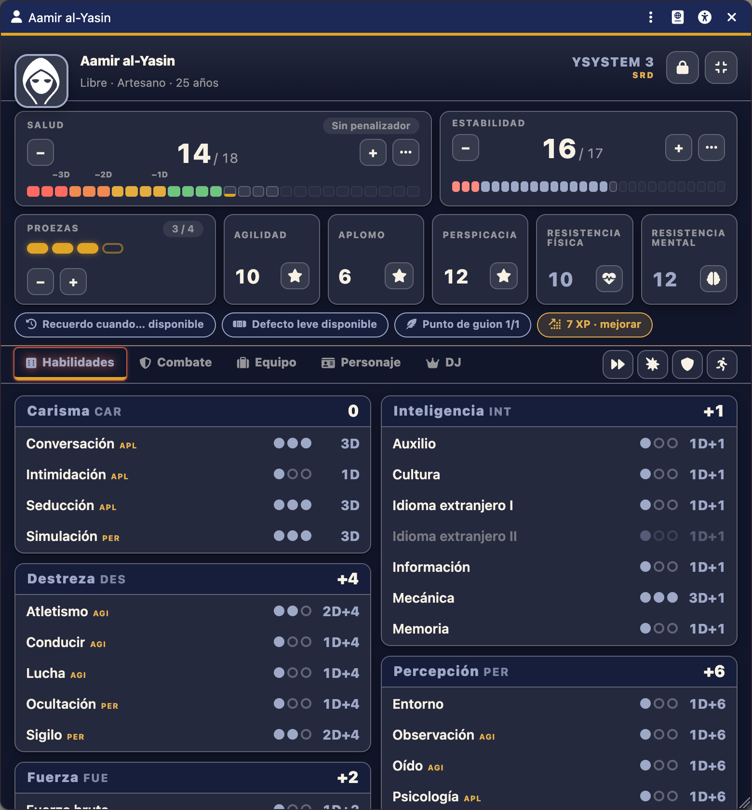
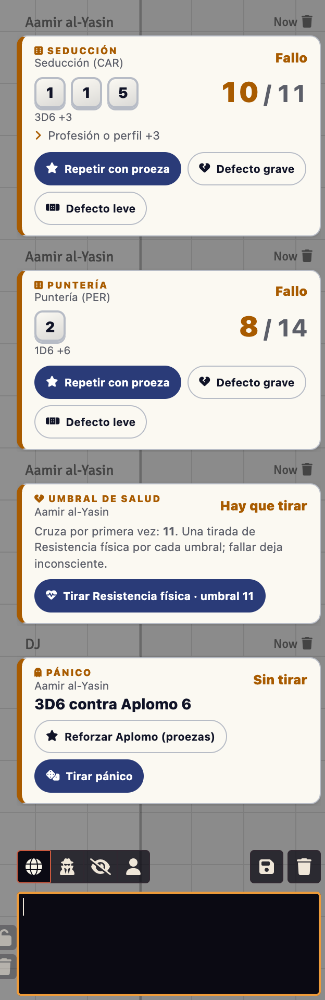
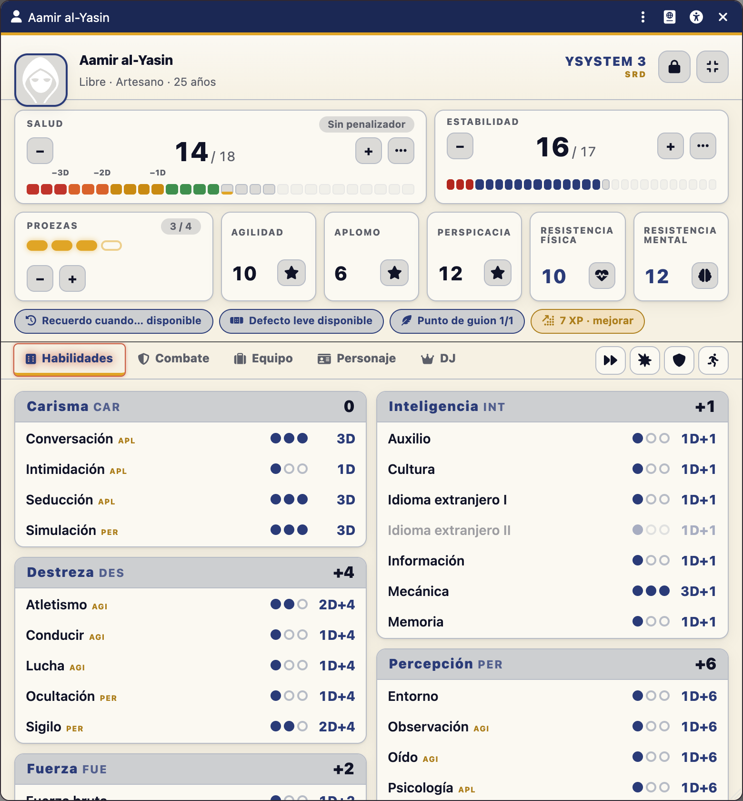
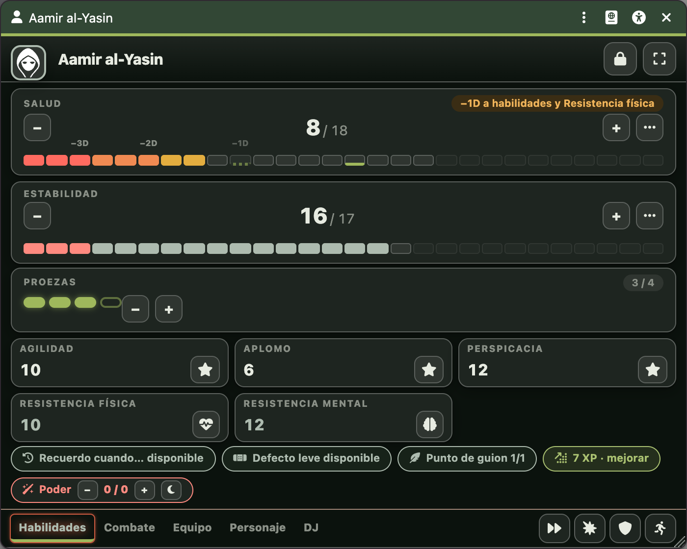
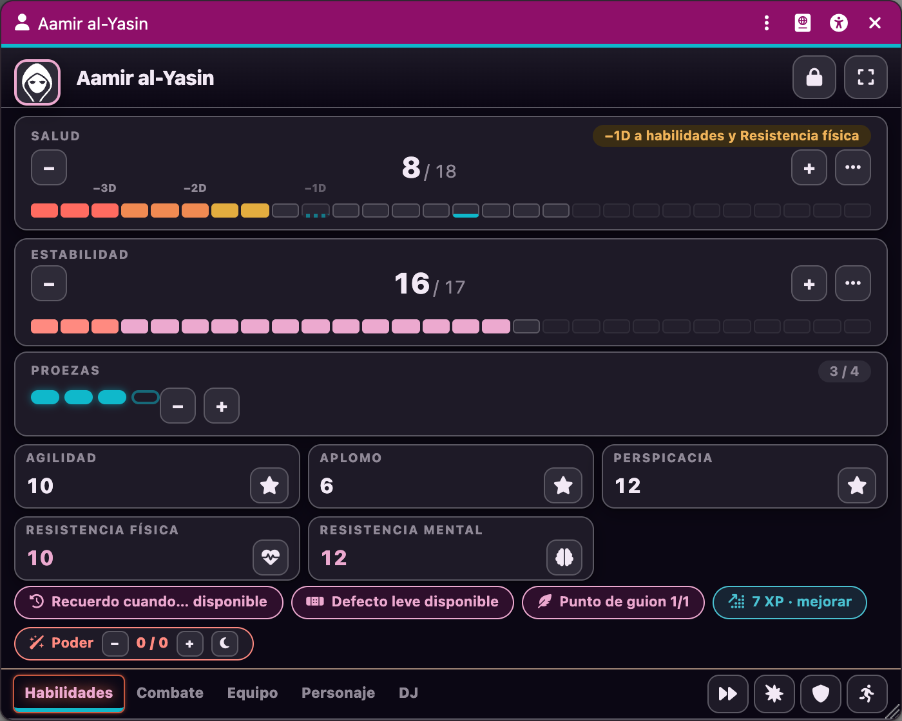
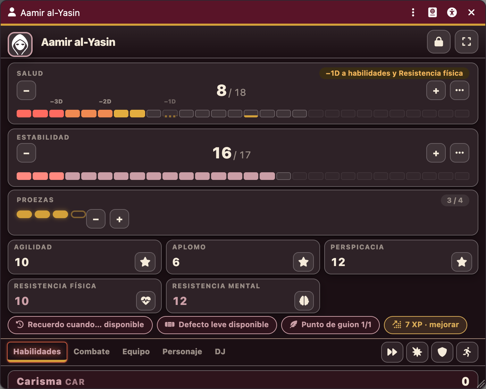
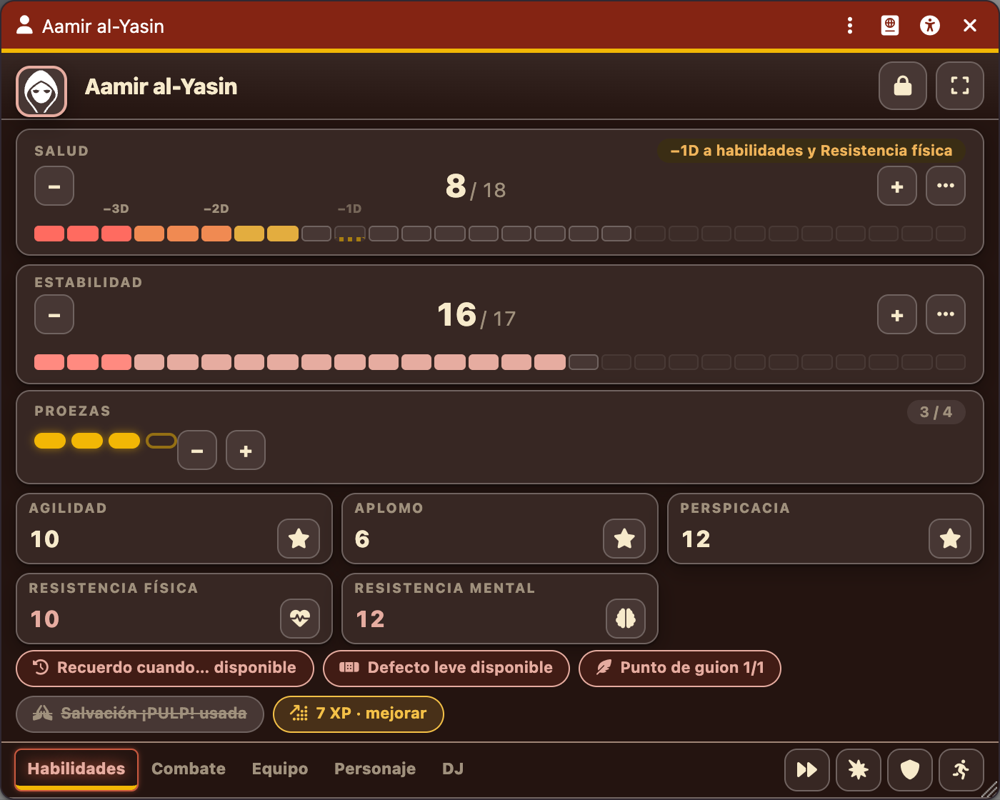
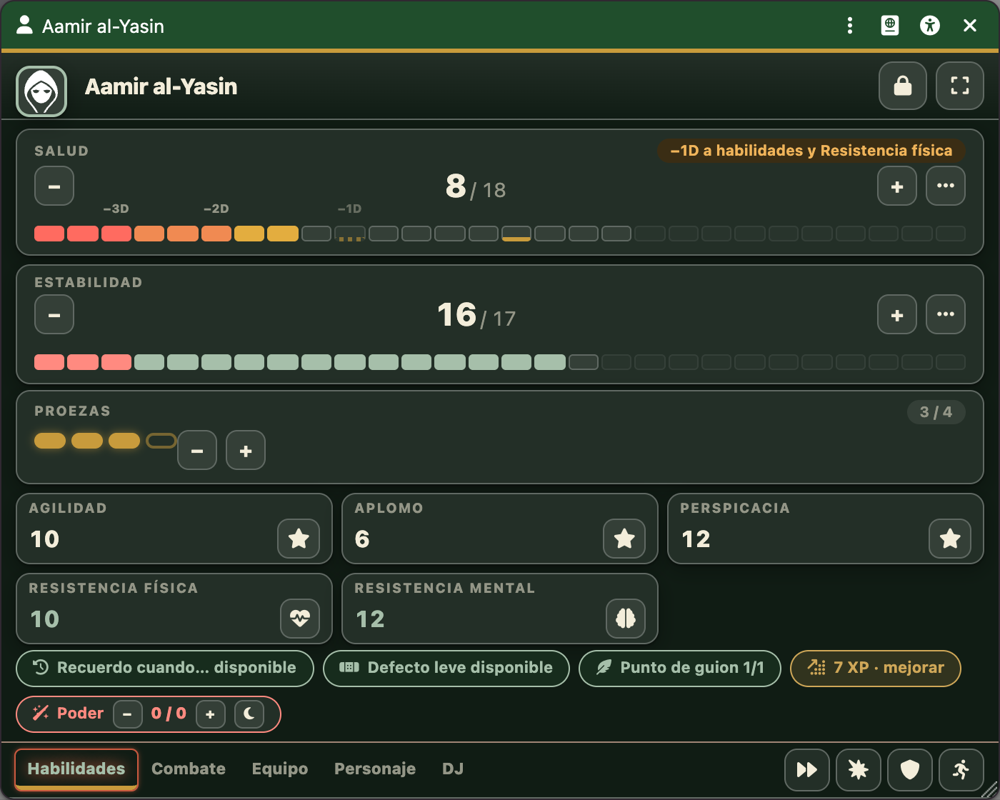
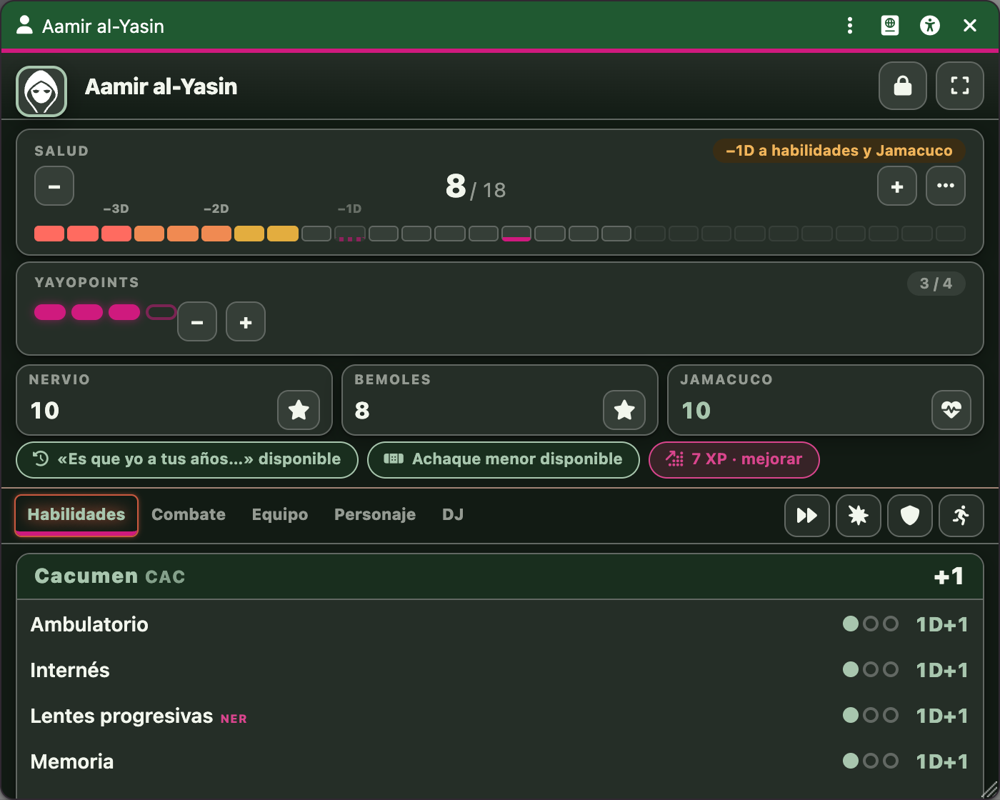
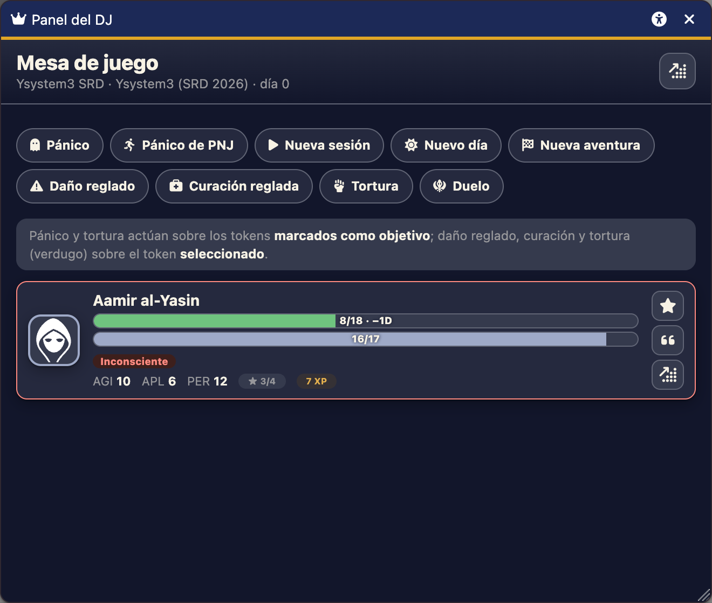

Tiradas con criterio
Pulsa una habilidad: el diálogo suma profesión, proeza, Recuerdo cuando…, acciones combinadas, ayudas y oscuridad, aplica el tope de 5D y toma la dificultad del token marcado.
El reglamento genérico de Walhalla Ediciones, automatizado en Foundry: proezas, defectos, combate, pánico y persecuciones. Una ficha pensada para la mesa, no para rellenar.


Cada regla del SRD, comprobada contra el texto oficial y cubierta por pruebas automáticas.
Pulsa una habilidad: el diálogo suma profesión, proeza, Recuerdo cuando…, acciones combinadas, ayudas y oscuridad, aplica el tope de 5D y toma la dificultad del token marcado.
Repite los dados que quieras (sin crítico), +1D, refuerza un valor fijo o convierte un crítico en contra en fallo. Los defectos los activa el DJ con un clic.
Apuntar, noquear, ráfagas, cobertura, ataques combinados, críticos que ignoran armadura, defensa completa, inmovilizar y zafarse. Iniciativa con desempate y acción extra.
Barras por zonas, penalizadores y una tarjeta de umbrales con un botón de Resistencia por cada uno que se cruza. Pánico con crisis de locura y habituación.
Persecuciones con distancias y tabla de sucesos, curación reglada, otras fuentes de daño, Experiencia, magia y psiónica, tortura y duelos.
Los 8 capítulos del SRD, 64 talentos, armas y protecciones, plantillas, poderes, PNJ del anexo, tablas y macros.
Salud, Estabilidad, proezas y los cinco valores fijos caben en la cabecera. Las 24 habilidades se reparten en columnas sin huecos. Modo compacto de 340 px para tener cuatro fichas abiertas, candado de edición y ventanas que recuerdan dónde las dejaste.
Claro y oscuro, alto contraste, fuente de alta legibilidad, texto escalable y encuadre del retrato: accesibilidad en todas las ventanas.

Elige entre Ysystem3 (2026) y la Edición Revisada (2023): cambian el daño, los explosivos, la curación, el tope de dados y más. Y viste la partida de lo que toque.






Además: ciencia ficción, terror contemporáneo y Dungeons & Yayos. Las variantes de YayoSystem cambian las reglas de verdad (atributos, habilidades, Nervio, Bemoles, Jamacuco); las de género activan los hacks que recomienda el libro (pánico ampliado, duelos, superpuntería…).

Un panel con todos los PJ (Salud, Estabilidad, proezas, estados) y las acciones que el reglamento reparte por capítulos: pánico, nueva sesión, nuevo día, nueva aventura, Experiencia, daño y curación reglados, tortura y duelos.
Los botones de las tarjetas del chat respetan los permisos: el jugador aplica su daño, el DJ activa los defectos.
Ysystem3 es obra de Ignacio Sánchez Aranda y Jorge Carrero Roig, publicado por Walhalla Ediciones. Su SRD se distribuye con licencia CC BY 4.0 y este paquete lo reproduce con atribución.
Código y recursos originales © 2026 Manu Romera (MIT). Sistema no oficial: no está afiliado ni aprobado por Walhalla Ediciones. Si te gusta, compra el libro.